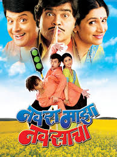

Release date :
2004 (India)
Directed by :
Sachin Pilgaonkar
Main characters :
Sachin Pilgaonkar
Supriya Pilgaonkar
Ashok Saraf
Vijay Patkar
Pradeep Patwardhan
Running time :
140 minutes
IMDB rating :
7.5/10 (based on 734 user votes)
Download Link :
Download Now